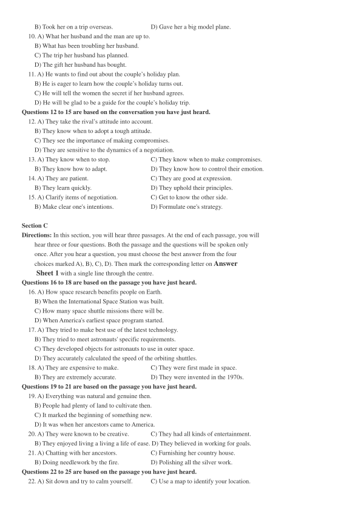
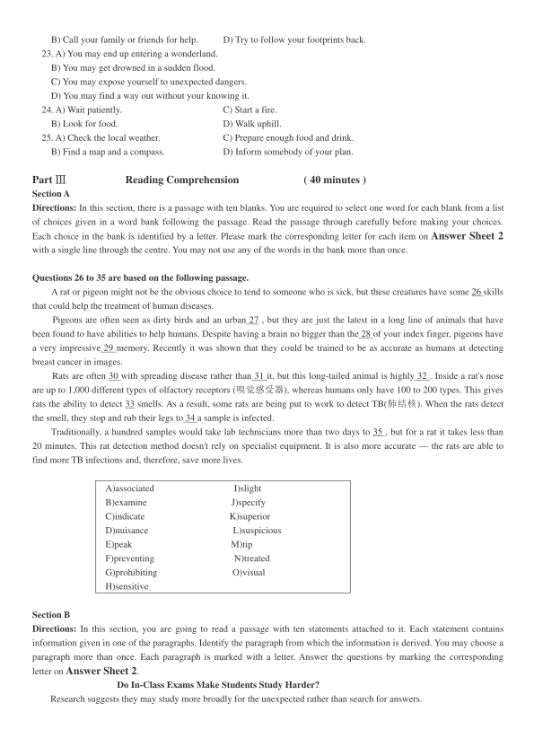
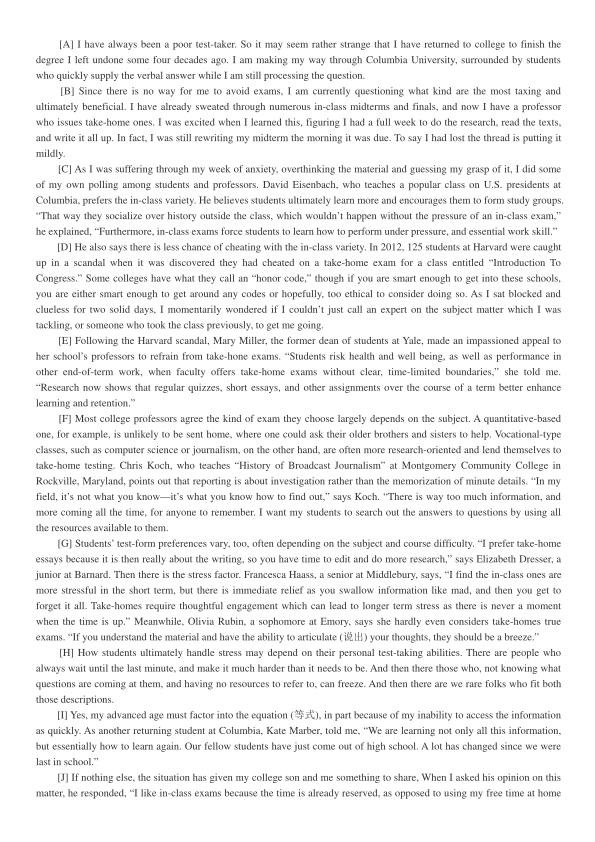
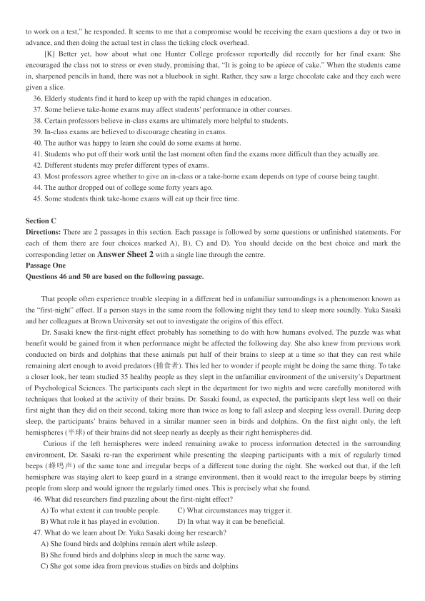
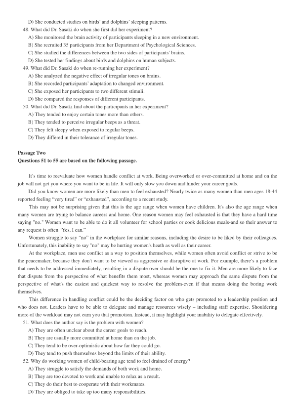
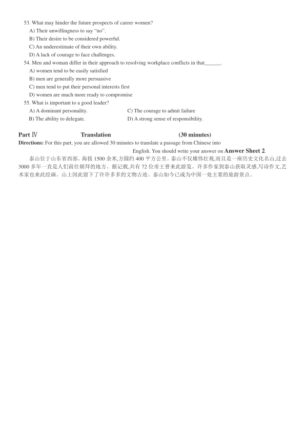

第 1 / 7 页

2017 年12 月大学英语四级考试真题（第1 套）
Part I
Writing
(30minutes)
（请于正式开考后半小时内完成该部分，之后将进行听力考试）
Directions: For this part, you are allowed 30 minutes to write a short essay on how to best handle the relationship
between parents and children. You should write at least120 words but no more than 180 words.
Part II
Listening Comprehension
(25 minutes)
Section A
Directions: In this section, you will hear three news reports. At the end of each news report, you will hear two or three
questions. Both the news report and the questions will be spoken only once. After you hear a question, you must choose the
best answer from the four choices marked A), B), C) and D). Then mark the corresponding letter on Answer Sheet 1 with
a single line through the centre.
Questions 1 and 2 are based on the news report you have just heard.
1. A) Her grandfather.
C) Her friend Erika.
B) Her grandmother.
D) Her little brother.
2. A) By taking pictures for passers-by.
C) By working part time at a hospital.
B) By selling lemonade and pictures.
D) By asking for help on social media.
Questions 3 and 4 are based on the news report you have just heard.
3. A) Testing the efficiency of the new solar panel.
B) Providing clean energy to five million people.
C) Generating electric power for passing vehicles.
D) Finding cheaper ways of highway construction.
4. A) They are only about half an inch thick.
B) They are made from cheap materials.
C) They can be laid right on top of existing highways.
D) They can stand the wear and tear of natural elements.
Questions 5 to 7 are based on the news report you have just heard.
5. A) The lack of clues about the species.
C) Endless fighting in the region.
B) Inadequate funding for research.
D) The hazards from the desert.
6. A) To observe the wildlife in the two national parks.
B) To study the habitat of lions in Sudan and Ethiopia.
C) To identify the reasons for the lions’ disappearance.
D) To find evidence of the existence of the “lost lions”.
7. A) Lions’ tracks.
C) Some camping facilities.
B) Lions walking.
D) Traps set by local hunters.
Section B
Directions：In this section, you will hear two long conversations. At the end of each conversation, you will hear four
questions. Both the conversation and the questions will be spoken only once. After you hear a question, you must choose the
best answer from the four choices marked A), B), C), and D). Then mark the corresponding letter on Answer Sheet 1
with a single line through the centre.
Questions 8 to 11 are based on the conversation you have just heard.
8. A) A special gift from the man.
C) A call from her dad.
B) Her wedding anniversary.
D) Her ‘lucky birthday’.
9. A) Threw her a surprise party.
C) Bought her a gold necklace.
查看 / 复制本页文字
2017 年12 月大学英语四级考试真题（第1 套） Part I Writing (30minutes) （请于正式开考后半小时内完成该部分，之后将进行听力考试） Directions: For this part, you are allowed 30 minutes to write a short essay on how to best handle the relationship between parents and children. You should write at least120 words but no more than 180 words. Part II Listening Comprehension (25 minutes) Section A Directions: In this section, you will hear three news reports. At the end of each news report, you will hear two or three questions. Both the news report and the questions will be spoken only once. After you hear a question, you must choose the best answer from the four choices marked A), B), C) and D). Then mark the corresponding letter on Answer Sheet 1 with a single line through the centre. Questions 1 and 2 are based on the news report you have just heard. 1. A) Her grandfather. C) Her friend Erika. B) Her grandmother. D) Her little brother. 2. A) By taking pictures for passers-by. C) By working part time at a hospital. B) By selling lemonade and pictures. D) By asking for help on social media. Questions 3 and 4 are based on the news report you have just heard. 3. A) Testing the efficiency of the new solar panel. B) Providing clean energy to five million people. C) Generating electric power for passing vehicles. D) Finding cheaper ways of highway construction. 4. A) They are only about half an inch thick. B) They are made from cheap materials. C) They can be laid right on top of existing highways. D) They can stand the wear and tear of natural elements. Questions 5 to 7 are based on the news report you have just heard. 5. A) The lack of clues about the species. C) Endless fighting in the region. B) Inadequate funding for research. D) The hazards from the desert. 6. A) To observe the wildlife in the two national parks. B) To study the habitat of lions in Sudan and Ethiopia. C) To identify the reasons for the lions’ disappearance. D) To find evidence of the existence of the “lost lions”. 7. A) Lions’ tracks. C) Some camping facilities. B) Lions walking. D) Traps set by local hunters. Section B Directions：In this section, you will hear two long conversations. At the end of each conversation, you will hear four questions. Both the conversation and the questions will be spoken only once. After you hear a question, you must choose the best answer from the four choices marked A), B), C), and D). Then mark the corresponding letter on Answer Sheet 1 with a single line through the centre. Questions 8 to 11 are based on the conversation you have just heard. 8. A) A special gift from the man. C) A call from her dad. B) Her wedding anniversary. D) Her ‘lucky birthday’. 9. A) Threw her a surprise party. C) Bought her a gold necklace.
第 2 / 7 页

B) Took her on a trip overseas.
D) Gave her a big model plane.
10. A) What her husband and the man are up to.
B) What has been troubling her husband.
C) The trip her husband has planned.
D) The gift her husband has bought.
11. A) He wants to find out about the couple’s holiday plan.
B) He is eager to learn how the couple’s holiday turns out.
C) He will tell the women the secret if her husband agrees.
D) He will be glad to be a guide for the couple’s holiday trip.
Questions 12 to 15 are based on the conversation you have just heard.
12. A) They take the rival’s attitude into account.
B) They know when to adopt a tough attitude.
C) They see the importance of making compromises.
D) They are sensitive to the dynamics of a negotiation.
13. A) They know when to stop.
C) They know when to make compromises.
B) They know how to adapt.
D) They know how to control their emotion.
14. A) They are patient.
C) They are good at expression.
B) They learn quickly.
D) They uphold their principles.
15. A) Clarify items of negotiation.
C) Get to know the other side.
B) Make clear one's intentions.
D) Formulate one's strategy.
Section C
Directions: In this section, you will hear three passages. At the end of each passage, you will
hear three or four questions. Both the passage and the questions will be spoken only
once. After you hear a question, you must choose the best answer from the four
choices marked A), B), C), D). Then mark the corresponding letter on Answer
Sheet 1 with a single line through the centre.
Questions 16 to 18 are based on the passage you have just heard.
16. A) How space research benefits people on Earth.
B) When the International Space Station was built.
C) How many space shuttle missions there will be.
D) When America's earliest space program started.
17. A) They tried to make best use of the latest technology.
B) They tried to meet astronauts' specific requirements.
C) They developed objects for astronauts to use in outer space.
D) They accurately calculated the speed of the orbiting shuttles.
18. A) They are expensive to make.
C) They were first made in space.
B) They are extremely accurate.
D) They were invented in the 1970s.
Questions 19 to 21 are based on the passage you have just heard.
19. A) Everything was natural and genuine then.
B) People had plenty of land to cultivate then.
C) It marked the beginning of something new.
D) It was when her ancestors came to America.
20. A) They were known to be creative.
C) They had all kinds of entertainment.
B) They enjoyed living a living a life of ease. D) They believed in working for goals.
21. A) Chatting with her ancestors.
C) Furnishing her country house.
B) Doing needlework by the fire.
D) Polishing all the silver work.
Questions 22 to 25 are based on the passage you have just heard.
22. A) Sit down and try to calm yourself.
C) Use a map to identify your location.
查看 / 复制本页文字
B) Took her on a trip overseas. D) Gave her a big model plane. 10. A) What her husband and the man are up to. B) What has been troubling her husband. C) The trip her husband has planned. D) The gift her husband has bought. 11. A) He wants to find out about the couple’s holiday plan. B) He is eager to learn how the couple’s holiday turns out. C) He will tell the women the secret if her husband agrees. D) He will be glad to be a guide for the couple’s holiday trip. Questions 12 to 15 are based on the conversation you have just heard. 12. A) They take the rival’s attitude into account. B) They know when to adopt a tough attitude. C) They see the importance of making compromises. D) They are sensitive to the dynamics of a negotiation. 13. A) They know when to stop. C) They know when to make compromises. B) They know how to adapt. D) They know how to control their emotion. 14. A) They are patient. C) They are good at expression. B) They learn quickly. D) They uphold their principles. 15. A) Clarify items of negotiation. C) Get to know the other side. B) Make clear one's intentions. D) Formulate one's strategy. Section C Directions: In this section, you will hear three passages. At the end of each passage, you will hear three or four questions. Both the passage and the questions will be spoken only once. After you hear a question, you must choose the best answer from the four choices marked A), B), C), D). Then mark the corresponding letter on Answer Sheet 1 with a single line through the centre. Questions 16 to 18 are based on the passage you have just heard. 16. A) How space research benefits people on Earth. B) When the International Space Station was built. C) How many space shuttle missions there will be. D) When America's earliest space program started. 17. A) They tried to make best use of the latest technology. B) They tried to meet astronauts' specific requirements. C) They developed objects for astronauts to use in outer space. D) They accurately calculated the speed of the orbiting shuttles. 18. A) They are expensive to make. C) They were first made in space. B) They are extremely accurate. D) They were invented in the 1970s. Questions 19 to 21 are based on the passage you have just heard. 19. A) Everything was natural and genuine then. B) People had plenty of land to cultivate then. C) It marked the beginning of something new. D) It was when her ancestors came to America. 20. A) They were known to be creative. C) They had all kinds of entertainment. B) They enjoyed living a living a life of ease. D) They believed in working for goals. 21. A) Chatting with her ancestors. C) Furnishing her country house. B) Doing needlework by the fire. D) Polishing all the silver work. Questions 22 to 25 are based on the passage you have just heard. 22. A) Sit down and try to calm yourself. C) Use a map to identify your location.
第 3 / 7 页

B) Call your family or friends for help.
D) Try to follow your footprints back.
23. A) You may end up entering a wonderland.
B) You may get drowned in a sudden flood.
C) You may expose yourself to unexpected dangers.
D) You may find a way out without your knowing it.
24. A) Wait patiently.
C) Start a fire.
B) Look for food.
D) Walk uphill.
25. A) Check the local weather.
C) Prepare enough food and drink.
B) Find a map and a compass.
D) Inform somebody of your plan.
Part Ⅲ
Reading Comprehension
( 40 minutes )
Section A
Directions: In this section, there is a passage with ten blanks. You are required to select one word for each blank from a list
of choices given in a word bank following the passage. Read the passage through carefully before making your choices.
Each choice in the bank is identified by a letter. Please mark the corresponding letter for each item on Answer Sheet 2
with a single line through the centre. You may not use any of the words in the bank more than once.
Questions 26 to 35 are based on the following passage.
A rat or pigeon might not be the obvious choice to tend to someone who is sick, but these creatures have some 26 skills
that could help the treatment of human diseases.
Pigeons are often seen as dirty birds and an urban 27 , but they are just the latest in a long line of animals that have
been found to have abilities to help humans. Despite having a brain no bigger than the 28 of your index finger, pigeons have
a very impressive 29 memory. Recently it was shown that they could be trained to be as accurate as humans at detecting
breast cancer in images.
Rats are often 30 with spreading disease rather than 31 it, but this long-tailed animal is highly 32 . Inside a rat's nose
are up to 1,000 different types of olfactory receptors (嗅觉感受器), whereas humans only have 100 to 200 types. This gives
rats the ability to detect 33 smells. As a result, some rats are being put to work to detect TB(肺结核). When the rats detect
the smell, they stop and rub their legs to 34 a sample is infected.
Traditionally, a hundred samples would take lab technicians more than two days to 35 , but for a rat it takes less than
20 minutes. This rat detection method doesn't rely on specialist equipment. It is also more accurate — the rats are able to
find more TB infections and, therefore, save more lives.
A)associated
I)slight
B)examine
J)specify
C)indicate
K)superior
D)nuisance
L)suspicious
E)peak
M)tip
F)preventing
N)treated
G)prohibiting
O)visual
H)sensitive
Section B
Directions: In this section, you are going to read a passage with ten statements attached to it. Each statement contains
information given in one of the paragraphs. Identify the paragraph from which the information is derived. You may choose a
paragraph more than once. Each paragraph is marked with a letter. Answer the questions by marking the corresponding
letter on Answer Sheet 2.
Do In-Class Exams Make Students Study Harder?
Research suggests they may study more broadly for the unexpected rather than search for answers.
查看 / 复制本页文字
B) Call your family or friends for help. D) Try to follow your footprints back. 23. A) You may end up entering a wonderland. B) You may get drowned in a sudden flood. C) You may expose yourself to unexpected dangers. D) You may find a way out without your knowing it. 24. A) Wait patiently. C) Start a fire. B) Look for food. D) Walk uphill. 25. A) Check the local weather. C) Prepare enough food and drink. B) Find a map and a compass. D) Inform somebody of your plan. Part Ⅲ Reading Comprehension ( 40 minutes ) Section A Directions: In this section, there is a passage with ten blanks. You are required to select one word for each blank from a list of choices given in a word bank following the passage. Read the passage through carefully before making your choices. Each choice in the bank is identified by a letter. Please mark the corresponding letter for each item on Answer Sheet 2 with a single line through the centre. You may not use any of the words in the bank more than once. Questions 26 to 35 are based on the following passage. A rat or pigeon might not be the obvious choice to tend to someone who is sick, but these creatures have some 26 skills that could help the treatment of human diseases. Pigeons are often seen as dirty birds and an urban 27 , but they are just the latest in a long line of animals that have been found to have abilities to help humans. Despite having a brain no bigger than the 28 of your index finger, pigeons have a very impressive 29 memory. Recently it was shown that they could be trained to be as accurate as humans at detecting breast cancer in images. Rats are often 30 with spreading disease rather than 31 it, but this long-tailed animal is highly 32 . Inside a rat's nose are up to 1,000 different types of olfactory receptors (嗅觉感受器), whereas humans only have 100 to 200 types. This gives rats the ability to detect 33 smells. As a result, some rats are being put to work to detect TB(肺结核). When the rats detect the smell, they stop and rub their legs to 34 a sample is infected. Traditionally, a hundred samples would take lab technicians more than two days to 35 , but for a rat it takes less than 20 minutes. This rat detection method doesn't rely on specialist equipment. It is also more accurate — the rats are able to find more TB infections and, therefore, save more lives. A)associated I)slight B)examine J)specify C)indicate K)superior D)nuisance L)suspicious E)peak M)tip F)preventing N)treated G)prohibiting O)visual H)sensitive Section B Directions: In this section, you are going to read a passage with ten statements attached to it. Each statement contains information given in one of the paragraphs. Identify the paragraph from which the information is derived. You may choose a paragraph more than once. Each paragraph is marked with a letter. Answer the questions by marking the corresponding letter on Answer Sheet 2. Do In-Class Exams Make Students Study Harder? Research suggests they may study more broadly for the unexpected rather than search for answers.
第 4 / 7 页

[A] I have always been a poor test-taker. So it may seem rather strange that I have returned to college to finish the
degree I left undone some four decades ago. I am making my way through Columbia University, surrounded by students
who quickly supply the verbal answer while I am still processing the question.
[B] Since there is no way for me to avoid exams, I am currently questioning what kind are the most taxing and
ultimately beneficial. I have already sweated through numerous in-class midterms and finals, and now I have a professor
who issues take-home ones. I was excited when I learned this, figuring I had a full week to do the research, read the texts,
and write it all up. In fact, I was still rewriting my midterm the morning it was due. To say I had lost the thread is putting it
mildly.
[C] As I was suffering through my week of anxiety, overthinking the material and guessing my grasp of it, I did some
of my own polling among students and professors. David Eisenbach, who teaches a popular class on U.S. presidents at
Columbia, prefers the in-class variety. He believes students ultimately learn more and encourages them to form study groups.
“That way they socialize over history outside the class, which wouldn’t happen without the pressure of an in-class exam,”
he explained, “Furthermore, in-class exams force students to learn how to perform under pressure, and essential work skill.”
[D] He also says there is less chance of cheating with the in-class variety. In 2012, 125 students at Harvard were caught
up in a scandal when it was discovered they had cheated on a take-home exam for a class entitled “Introduction To
Congress.” Some colleges have what they call an “honor code,” though if you are smart enough to get into these schools,
you are either smart enough to get around any codes or hopefully, too ethical to consider doing so. As I sat blocked and
clueless for two solid days, I momentarily wondered if I couldn’t just call an expert on the subject matter which I was
tackling, or someone who took the class previously, to get me going.
[E] Following the Harvard scandal, Mary Miller, the former dean of students at Yale, made an impassioned appeal to
her school’s professors to refrain from take-hone exams. “Students risk health and well being, as well as performance in
other end-of-term work, when faculty offers take-home exams without clear, time-limited boundaries,” she told me.
“Research now shows that regular quizzes, short essays, and other assignments over the course of a term better enhance
learning and retention.”
[F] Most college professors agree the kind of exam they choose largely depends on the subject. A quantitative-based
one, for example, is unlikely to be sent home, where one could ask their older brothers and sisters to help. Vocational-type
classes, such as computer science or journalism, on the other hand, are often more research-oriented and lend themselves to
take-home testing. Chris Koch, who teaches “History of Broadcast Journalism” at Montgomery Community College in
Rockville, Maryland, points out that reporting is about investigation rather than the memorization of minute details. “In my
field, it’s not what you know—it’s what you know how to find out,” says Koch. “There is way too much information, and
more coming all the time, for anyone to remember. I want my students to search out the answers to questions by using all
the resources available to them.
[G] Students’ test-form preferences vary, too, often depending on the subject and course difficulty. “I prefer take-home
essays because it is then really about the writing, so you have time to edit and do more research,” says Elizabeth Dresser, a
junior at Barnard. Then there is the stress factor. Francesca Haass, a senior at Middlebury, says, “I find the in-class ones are
more stressful in the short term, but there is immediate relief as you swallow information like mad, and then you get to
forget it all. Take-homes require thoughtful engagement which can lead to longer term stress as there is never a moment
when the time is up.” Meanwhile, Olivia Rubin, a sophomore at Emory, says she hardly even considers take-homes true
exams. “If you understand the material and have the ability to articulate (说出) your thoughts, they should be a breeze.”
[H] How students ultimately handle stress may depend on their personal test-taking abilities. There are people who
always wait until the last minute, and make it much harder than it needs to be. And then there those who, not knowing what
questions are coming at them, and having no resources to refer to, can freeze. And then there are we rare folks who fit both
those descriptions.
[I] Yes, my advanced age must factor into the equation (等式), in part because of my inability to access the information
as quickly. As another returning student at Columbia, Kate Marber, told me, “We are learning not only all this information,
but essentially how to learn again. Our fellow students have just come out of high school. A lot has changed since we were
last in school.”
[J] If nothing else, the situation has given my college son and me something to share, When I asked his opinion on this
matter, he responded, “I like in-class exams because the time is already reserved, as opposed to using my free time at home
查看 / 复制本页文字
[A] I have always been a poor test-taker. So it may seem rather strange that I have returned to college to finish the degree I left undone some four decades ago. I am making my way through Columbia University, surrounded by students who quickly supply the verbal answer while I am still processing the question. [B] Since there is no way for me to avoid exams, I am currently questioning what kind are the most taxing and ultimately beneficial. I have already sweated through numerous in-class midterms and finals, and now I have a professor who issues take-home ones. I was excited when I learned this, figuring I had a full week to do the research, read the texts, and write it all up. In fact, I was still rewriting my midterm the morning it was due. To say I had lost the thread is putting it mildly. [C] As I was suffering through my week of anxiety, overthinking the material and guessing my grasp of it, I did some of my own polling among students and professors. David Eisenbach, who teaches a popular class on U.S. presidents at Columbia, prefers the in-class variety. He believes students ultimately learn more and encourages them to form study groups. “That way they socialize over history outside the class, which wouldn’t happen without the pressure of an in-class exam,” he explained, “Furthermore, in-class exams force students to learn how to perform under pressure, and essential work skill.” [D] He also says there is less chance of cheating with the in-class variety. In 2012, 125 students at Harvard were caught up in a scandal when it was discovered they had cheated on a take-home exam for a class entitled “Introduction To Congress.” Some colleges have what they call an “honor code,” though if you are smart enough to get into these schools, you are either smart enough to get around any codes or hopefully, too ethical to consider doing so. As I sat blocked and clueless for two solid days, I momentarily wondered if I couldn’t just call an expert on the subject matter which I was tackling, or someone who took the class previously, to get me going. [E] Following the Harvard scandal, Mary Miller, the former dean of students at Yale, made an impassioned appeal to her school’s professors to refrain from take-hone exams. “Students risk health and well being, as well as performance in other end-of-term work, when faculty offers take-home exams without clear, time-limited boundaries,” she told me. “Research now shows that regular quizzes, short essays, and other assignments over the course of a term better enhance learning and retention.” [F] Most college professors agree the kind of exam they choose largely depends on the subject. A quantitative-based one, for example, is unlikely to be sent home, where one could ask their older brothers and sisters to help. Vocational-type classes, such as computer science or journalism, on the other hand, are often more research-oriented and lend themselves to take-home testing. Chris Koch, who teaches “History of Broadcast Journalism” at Montgomery Community College in Rockville, Maryland, points out that reporting is about investigation rather than the memorization of minute details. “In my field, it’s not what you know—it’s what you know how to find out,” says Koch. “There is way too much information, and more coming all the time, for anyone to remember. I want my students to search out the answers to questions by using all the resources available to them. [G] Students’ test-form preferences vary, too, often depending on the subject and course difficulty. “I prefer take-home essays because it is then really about the writing, so you have time to edit and do more research,” says Elizabeth Dresser, a junior at Barnard. Then there is the stress factor. Francesca Haass, a senior at Middlebury, says, “I find the in-class ones are more stressful in the short term, but there is immediate relief as you swallow information like mad, and then you get to forget it all. Take-homes require thoughtful engagement which can lead to longer term stress as there is never a moment when the time is up.” Meanwhile, Olivia Rubin, a sophomore at Emory, says she hardly even considers take-homes true exams. “If you understand the material and have the ability to articulate (说出) your thoughts, they should be a breeze.” [H] How students ultimately handle stress may depend on their personal test-taking abilities. There are people who always wait until the last minute, and make it much harder than it needs to be. And then there those who, not knowing what questions are coming at them, and having no resources to refer to, can freeze. And then there are we rare folks who fit both those descriptions. [I] Yes, my advanced age must factor into the equation (等式), in part because of my inability to access the information as quickly. As another returning student at Columbia, Kate Marber, told me, “We are learning not only all this information, but essentially how to learn again. Our fellow students have just come out of high school. A lot has changed since we were last in school.” [J] If nothing else, the situation has given my college son and me something to share, When I asked his opinion on this matter, he responded, “I like in-class exams because the time is already reserved, as opposed to using my free time at home
第 5 / 7 页

to work on a test,” he responded. It seems to me that a compromise would be receiving the exam questions a day or two in
advance, and then doing the actual test in class the ticking clock overhead.
[K] Better yet, how about what one Hunter College professor reportedly did recently for her final exam: She
encouraged the class not to stress or even study, promising that, “It is going to be apiece of cake.” When the students came
in, sharpened pencils in hand, there was not a bluebook in sight. Rather, they saw a large chocolate cake and they each were
given a slice.
36. Elderly students find it hard to keep up with the rapid changes in education.
37. Some believe take-home exams may affect students' performance in other courses.
38. Certain professors believe in-class exams are ultimately more helpful to students.
39. In-class exams are believed to discourage cheating in exams.
40. The author was happy to learn she could do some exams at home.
41. Students who put off their work until the last moment often find the exams more difficult than they actually are.
42. Different students may prefer different types of exams.
43. Most professors agree whether to give an in-class or a take-home exam depends on type of course being taught.
44. The author dropped out of college some forty years ago.
45. Some students think take-home exams will eat up their free time.
Section C
Directions: There are 2 passages in this section. Each passage is followed by some questions or unfinished statements. For
each of them there are four choices marked A), B), C) and D). You should decide on the best choice and mark the
corresponding letter on Answer Sheet 2 with a single line through the centre.
Passage One
Questions 46 and 50 are based on the following passage.
That people often experience trouble sleeping in a different bed in unfamiliar surroundings is a phenomenon known as
the “first-night” effect. If a person stays in the same room the following night they tend to sleep more soundly. Yuka Sasaki
and her colleagues at Brown University set out to investigate the origins of this effect.
Dr. Sasaki knew the first-night effect probably has something to do with how humans evolved. The puzzle was what
benefit would be gained from it when performance might be affected the following day. She also knew from previous work
conducted on birds and dolphins that these animals put half of their brains to sleep at a time so that they can rest while
remaining alert enough to avoid predators (捕食者). This led her to wonder if people might be doing the same thing. To take
a closer look, her team studied 35 healthy people as they slept in the unfamiliar environment of the university’s Department
of Psychological Sciences. The participants each slept in the department for two nights and were carefully monitored with
techniques that looked at the activity of their brains. Dr. Sasaki found, as expected, the participants slept less well on their
first night than they did on their second, taking more than twice as long to fall asleep and sleeping less overall. During deep
sleep, the participants’ brains behaved in a similar manner seen in birds and dolphins. On the first night only, the left
hemispheres (半球) of their brains did not sleep nearly as deeply as their right hemispheres did.
Curious if the left hemispheres were indeed remaining awake to process information detected in the surrounding
environment, Dr. Sasaki re-ran the experiment while presenting the sleeping participants with a mix of regularly timed
beeps (蜂鸣声) of the same tone and irregular beeps of a different tone during the night. She worked out that, if the left
hemisphere was staying alert to keep guard in a strange environment, then it would react to the irregular beeps by stirring
people from sleep and would ignore the regularly timed ones. This is precisely what she found.
46. What did researchers find puzzling about the first-night effect?
A) To what extent it can trouble people.
C) What circumstances may trigger it.
B) What role it has played in evolution.
D) In what way it can be beneficial.
47. What do we learn about Dr. Yuka Sasaki doing her research?
A) She found birds and dolphins remain alert while asleep.
B) She found birds and dolphins sleep in much the same way.
C) She got some idea from previous studies on birds and dolphins
查看 / 复制本页文字
to work on a test,” he responded. It seems to me that a compromise would be receiving the exam questions a day or two in advance, and then doing the actual test in class the ticking clock overhead. [K] Better yet, how about what one Hunter College professor reportedly did recently for her final exam: She encouraged the class not to stress or even study, promising that, “It is going to be apiece of cake.” When the students came in, sharpened pencils in hand, there was not a bluebook in sight. Rather, they saw a large chocolate cake and they each were given a slice. 36. Elderly students find it hard to keep up with the rapid changes in education. 37. Some believe take-home exams may affect students' performance in other courses. 38. Certain professors believe in-class exams are ultimately more helpful to students. 39. In-class exams are believed to discourage cheating in exams. 40. The author was happy to learn she could do some exams at home. 41. Students who put off their work until the last moment often find the exams more difficult than they actually are. 42. Different students may prefer different types of exams. 43. Most professors agree whether to give an in-class or a take-home exam depends on type of course being taught. 44. The author dropped out of college some forty years ago. 45. Some students think take-home exams will eat up their free time. Section C Directions: There are 2 passages in this section. Each passage is followed by some questions or unfinished statements. For each of them there are four choices marked A), B), C) and D). You should decide on the best choice and mark the corresponding letter on Answer Sheet 2 with a single line through the centre. Passage One Questions 46 and 50 are based on the following passage. That people often experience trouble sleeping in a different bed in unfamiliar surroundings is a phenomenon known as the “first-night” effect. If a person stays in the same room the following night they tend to sleep more soundly. Yuka Sasaki and her colleagues at Brown University set out to investigate the origins of this effect. Dr. Sasaki knew the first-night effect probably has something to do with how humans evolved. The puzzle was what benefit would be gained from it when performance might be affected the following day. She also knew from previous work conducted on birds and dolphins that these animals put half of their brains to sleep at a time so that they can rest while remaining alert enough to avoid predators (捕食者). This led her to wonder if people might be doing the same thing. To take a closer look, her team studied 35 healthy people as they slept in the unfamiliar environment of the university’s Department of Psychological Sciences. The participants each slept in the department for two nights and were carefully monitored with techniques that looked at the activity of their brains. Dr. Sasaki found, as expected, the participants slept less well on their first night than they did on their second, taking more than twice as long to fall asleep and sleeping less overall. During deep sleep, the participants’ brains behaved in a similar manner seen in birds and dolphins. On the first night only, the left hemispheres (半球) of their brains did not sleep nearly as deeply as their right hemispheres did. Curious if the left hemispheres were indeed remaining awake to process information detected in the surrounding environment, Dr. Sasaki re-ran the experiment while presenting the sleeping participants with a mix of regularly timed beeps (蜂鸣声) of the same tone and irregular beeps of a different tone during the night. She worked out that, if the left hemisphere was staying alert to keep guard in a strange environment, then it would react to the irregular beeps by stirring people from sleep and would ignore the regularly timed ones. This is precisely what she found. 46. What did researchers find puzzling about the first-night effect? A) To what extent it can trouble people. C) What circumstances may trigger it. B) What role it has played in evolution. D) In what way it can be beneficial. 47. What do we learn about Dr. Yuka Sasaki doing her research? A) She found birds and dolphins remain alert while asleep. B) She found birds and dolphins sleep in much the same way. C) She got some idea from previous studies on birds and dolphins
第 6 / 7 页

D) She conducted studies on birds’ and dolphins’ sleeping patterns.
48. What did Dr. Sasaki do when she first did her experiment?
A) She monitored the brain activity of participants sleeping in a new environment.
B) She recruited 35 participants from her Department of Psychological Sciences.
C) She studied the differences between the two sides of participants’ brains.
D) She tested her findings about birds and dolphins on human subjects.
49. What did Dr. Sasaki do when re-running her experiment?
A) She analyzed the negative effect of irregular tones on brains.
B) She recorded participants’ adaptation to changed environment.
C) She exposed her participants to two different stimuli.
D) She compared the responses of different participants.
50. What did Dr. Sasaki find about the participants in her experiment?
A) They tended to enjoy certain tones more than others.
B) They tended to perceive irregular beeps as a threat.
C) They felt sleepy when exposed to regular beeps.
D) They differed in their tolerance of irregular tones.
Passage Two
Questions 51 to 55 are based on the following passage.
It’s time to reevaluate how women handle conflict at work. Being overworked or over-committed at home and on the
job will not get you where you want to be in life. It will only slow you down and hinder your career goals.
Did you know women are more likely than men to feel exhausted? Nearly twice as many women than men ages 18-44
reported feeling “very tired” or “exhausted”, according to a recent study.
This may not be surprising given that this is the age range when women have children. It's also the age range when
many women are trying to balance careers and home. One reason women may feel exhausted is that they have a hard time
saying "no." Women want to be able to do it all volunteer for school parties or cook delicious meals-and so their answer to
any request is often “Yes, I can.”
Women struggle to say “no” in the workplace for similar reasons, including the desire to be liked by their colleagues.
Unfortunately, this inability to say "no" may be hurting women's heath as well as their career.
At the workplace, men use conflict as a way to position themselves, while women often avoid conflict or strive to be
the peacemaker, because they don't want to be viewed as aggressive or disruptive at work. For example, there’s a problem
that needs to be addressed immediately, resulting in a dispute over should be the one to fix it. Men are more likely to face
that dispute from the perspective of what benefits them most, whereas women may approach the same dispute from the
perspective of what's the easiest and quickest way to resolve the problem-even if that means doing the boring work
themselves.
This difference in handling conflict could be the deciding factor on who gets promoted to a leadership position and
who does not. Leaders have to be able to delegate and manage resources wisely – including staff expertise. Shouldering
more of the workload may not earn you that promotion. Instead, it may highlight your inability to delegate effectively.
51. What does the author say is the problem with women?
A) They are often unclear about the career goals to reach.
B) They are usually more committed at home than on the job.
C) They tend to be over-optimistic about how far they could go.
D) They tend to push themselves beyond the limits of their ability.
52. Why do working women of child-bearing age tend to feel drained of energy?
A) They struggle to satisfy the demands of both work and home.
B) They are too devoted to work and unable to relax as a result.
C) They do their best to cooperate with their workmates.
D) They are obliged to take up too many responsibilities.
查看 / 复制本页文字
D) She conducted studies on birds’ and dolphins’ sleeping patterns. 48. What did Dr. Sasaki do when she first did her experiment? A) She monitored the brain activity of participants sleeping in a new environment. B) She recruited 35 participants from her Department of Psychological Sciences. C) She studied the differences between the two sides of participants’ brains. D) She tested her findings about birds and dolphins on human subjects. 49. What did Dr. Sasaki do when re-running her experiment? A) She analyzed the negative effect of irregular tones on brains. B) She recorded participants’ adaptation to changed environment. C) She exposed her participants to two different stimuli. D) She compared the responses of different participants. 50. What did Dr. Sasaki find about the participants in her experiment? A) They tended to enjoy certain tones more than others. B) They tended to perceive irregular beeps as a threat. C) They felt sleepy when exposed to regular beeps. D) They differed in their tolerance of irregular tones. Passage Two Questions 51 to 55 are based on the following passage. It’s time to reevaluate how women handle conflict at work. Being overworked or over-committed at home and on the job will not get you where you want to be in life. It will only slow you down and hinder your career goals. Did you know women are more likely than men to feel exhausted? Nearly twice as many women than men ages 18-44 reported feeling “very tired” or “exhausted”, according to a recent study. This may not be surprising given that this is the age range when women have children. It's also the age range when many women are trying to balance careers and home. One reason women may feel exhausted is that they have a hard time saying "no." Women want to be able to do it all volunteer for school parties or cook delicious meals-and so their answer to any request is often “Yes, I can.” Women struggle to say “no” in the workplace for similar reasons, including the desire to be liked by their colleagues. Unfortunately, this inability to say "no" may be hurting women's heath as well as their career. At the workplace, men use conflict as a way to position themselves, while women often avoid conflict or strive to be the peacemaker, because they don't want to be viewed as aggressive or disruptive at work. For example, there’s a problem that needs to be addressed immediately, resulting in a dispute over should be the one to fix it. Men are more likely to face that dispute from the perspective of what benefits them most, whereas women may approach the same dispute from the perspective of what's the easiest and quickest way to resolve the problem-even if that means doing the boring work themselves. This difference in handling conflict could be the deciding factor on who gets promoted to a leadership position and who does not. Leaders have to be able to delegate and manage resources wisely – including staff expertise. Shouldering more of the workload may not earn you that promotion. Instead, it may highlight your inability to delegate effectively. 51. What does the author say is the problem with women? A) They are often unclear about the career goals to reach. B) They are usually more committed at home than on the job. C) They tend to be over-optimistic about how far they could go. D) They tend to push themselves beyond the limits of their ability. 52. Why do working women of child-bearing age tend to feel drained of energy? A) They struggle to satisfy the demands of both work and home. B) They are too devoted to work and unable to relax as a result. C) They do their best to cooperate with their workmates. D) They are obliged to take up too many responsibilities.
第 7 / 7 页

53. What may hinder the future prospects of career women?
A) Their unwillingness to say “no”.
B) Their desire to be considered powerful.
C) An underestimate of their own ability.
D) A lack of courage to face challenges.
54. Men and woman differ in their approach to resolving workplace conflicts in that______.
A) women tend to be easily satisfied
B) men are generally more persuasive
C) men tend to put their personal interests first
D) women are much more ready to compromise
55. What is important to a good leader?
A) A dominant personality.
C) The courage to admit failure
B) The ability to delegate.
D) A strong sense of responsibility.
Part Ⅳ
Translation
(30 minutes)
Directions: For this part, you are allowed 30 minutes to translate a passage from Chinese into
English. You should write your answer on Answer Sheet 2.
泰山位于山东省西部。海拔1500 余米,方圆约400 平方公里。泰山不仅雄伟壮观,而且是一座历史文化名山,过去
3000 多年一直是人们前往朝拜的地方。据记载,共有72 位帝王曾来此游览。许多作家到泰山获取灵感,写诗作文,艺
术家也来此绘画。山上因此留下了许许多多的文物古迹。泰山如今已成为中国一处主要的旅游景点。
查看 / 复制本页文字
53. What may hinder the future prospects of career women? A) Their unwillingness to say “no”. B) Their desire to be considered powerful. C) An underestimate of their own ability. D) A lack of courage to face challenges. 54. Men and woman differ in their approach to resolving workplace conflicts in that______. A) women tend to be easily satisfied B) men are generally more persuasive C) men tend to put their personal interests first D) women are much more ready to compromise 55. What is important to a good leader? A) A dominant personality. C) The courage to admit failure B) The ability to delegate. D) A strong sense of responsibility. Part Ⅳ Translation (30 minutes) Directions: For this part, you are allowed 30 minutes to translate a passage from Chinese into English. You should write your answer on Answer Sheet 2. 泰山位于山东省西部。海拔1500 余米,方圆约400 平方公里。泰山不仅雄伟壮观,而且是一座历史文化名山,过去 3000 多年一直是人们前往朝拜的地方。据记载,共有72 位帝王曾来此游览。许多作家到泰山获取灵感,写诗作文,艺 术家也来此绘画。山上因此留下了许许多多的文物古迹。泰山如今已成为中国一处主要的旅游景点。